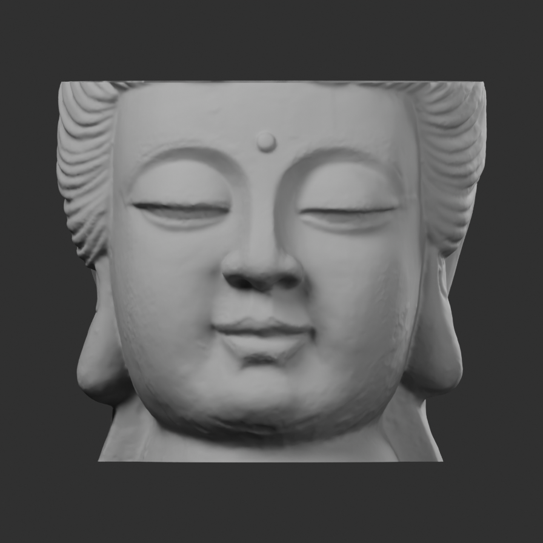
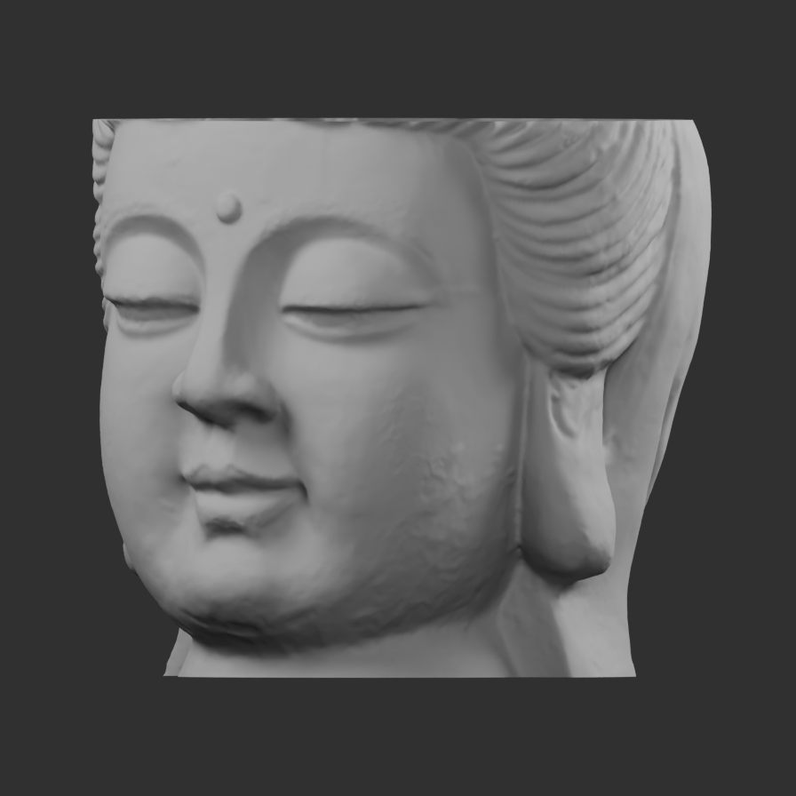
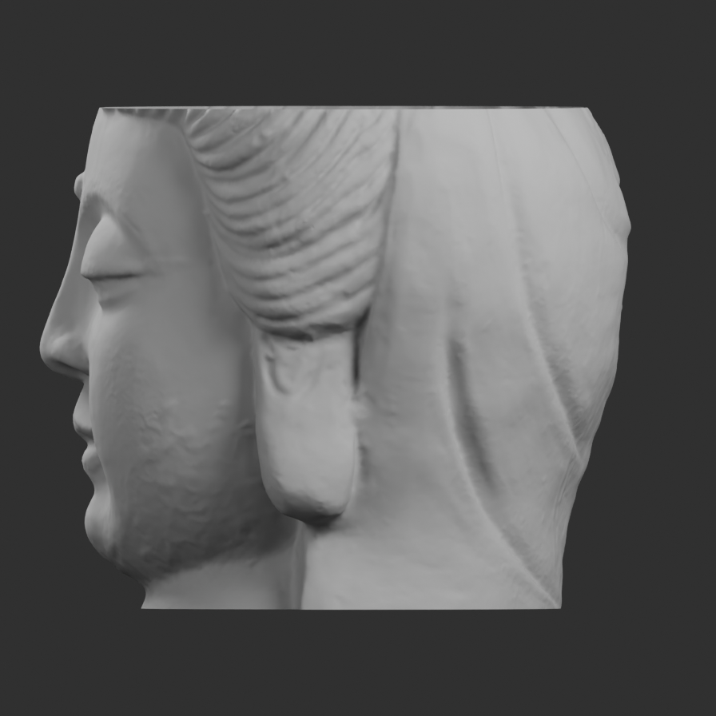

Actual sculpted face / ears / neck · source candidate 173
Candidate only · photographic fidelity unaccepted · no canonical integration
Three actual 896px Cycles Metal renders through the shared official FIFO, with neutral clay and no scan texture or image projection. Crown and neck are documented open mounting cuts. Source face anatomy and normals remain intact.

Front · actual downcast lids, nostrils, lips, cheeks and long lobes.
Three quarter · scan chatter and donor side hair remain visible.
Profile · physical nasal/cheek/lip depth and complete side/rear surface.“Buddha head” by peel-3d.com, CC BY 4.0. Cropped and uniformly normalized from a scanner-captured decorative crowned sculpture. Culture and era unspecified by creator; not a verified Japanese Amida. The face is broader/softer than the reference, and the source mouth/lids retain small scan irregularities.
330k-triangle +Y-up/+Z-front GLB · Editable Blender surface · Manifest and source traces · Independent validation · Use notes